Wave Check
Bem-vindo ao Wave Check: O Portal Definitivo para Surfistas e Amantes do Mar! Se você é um ávido surfista que vive para aqueles momentos mágicos nas ondas, ou simplesmente alguém que adora estar perto do mar, você está no lugar certo! O Wave Check é o seu guia confiável para todas as informações essenciais sobre as condições das ondas em praias ao redor do mundo. Imagine poder planejar suas sessões de surf com precisão, escolhendo os melhores momentos para pegar aquelas ondas incríveis. O Wave Check torna isso uma realidade, oferecendo uma experiência completa para todos os amantes do oceano
Surfistas que nos acompanham:
| Gabriel Medina: O Surfista Visionário | Felipe Toledo: O Artista das Ondas | Italo Ferreira: O Surfista Determinado |
| Gabriel Medina é um nome que ecoa com força no mundo do surf. Nascido no Brasil, esse surfista visionário cativou o coração de todos com seu talento inegável e determinação feroz. | Felipe Toledo é um artista das ondas que conquistou o mundo do surf com sua criatividade e estilo único. Com sua abordagem inovadora, ele trouxe manobras revolucionárias para o esporte | Italo Ferreira, um verdadeiro exemplo de determinação, provou que com trabalho duro e paixão, você pode alcançar o topo do mundo do surf. Originário do Brasil, Italo é conhecido por sua atitude destemida e sua capacidade de superar adversidades. |
| 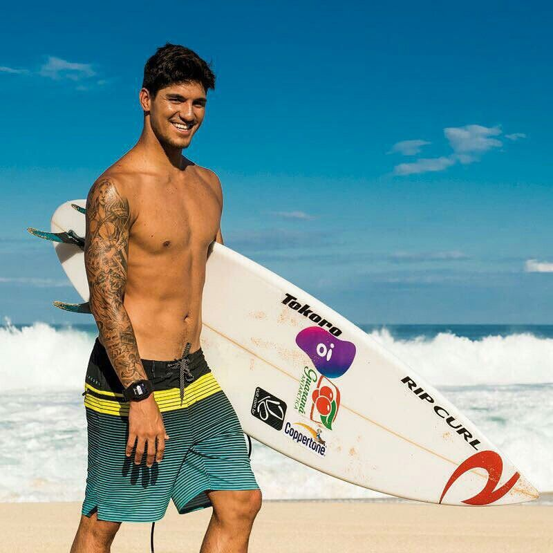 | 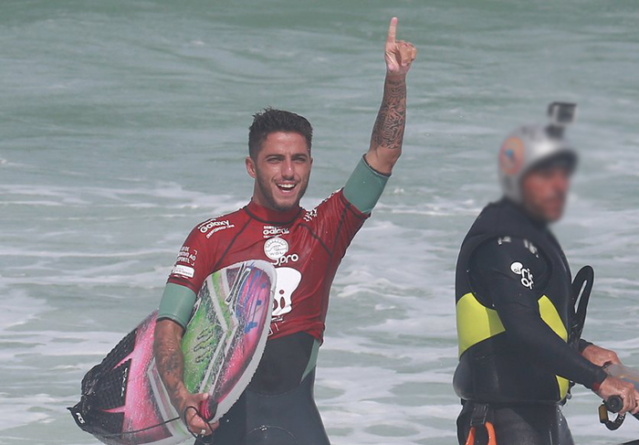 |  |
Produtos colecionáveis
| 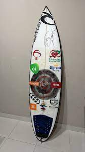 | 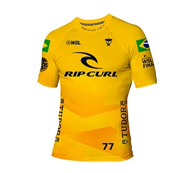 | 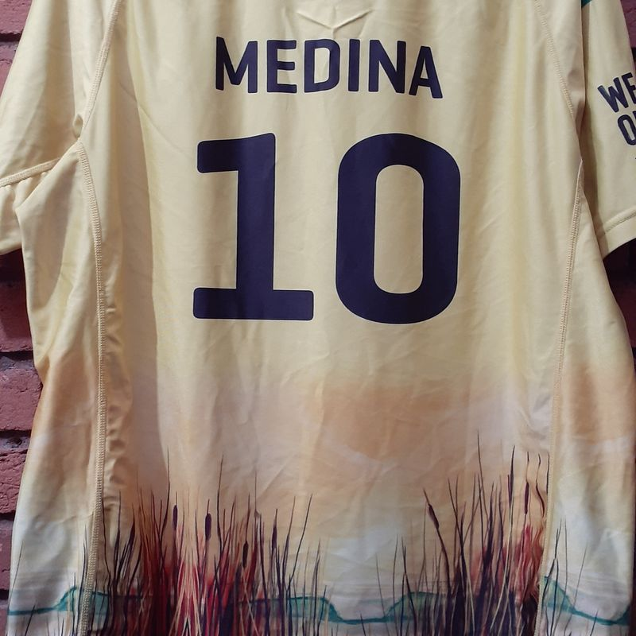 |
| 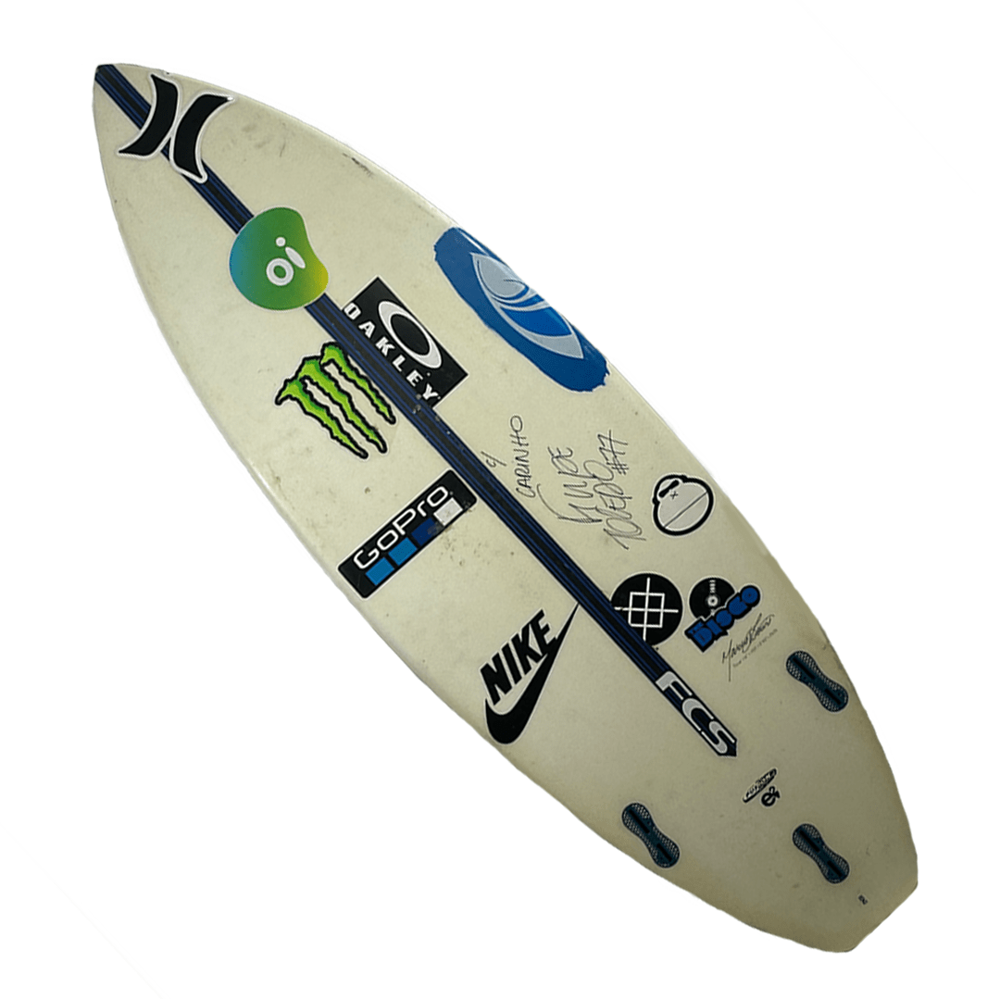 | 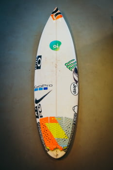 | 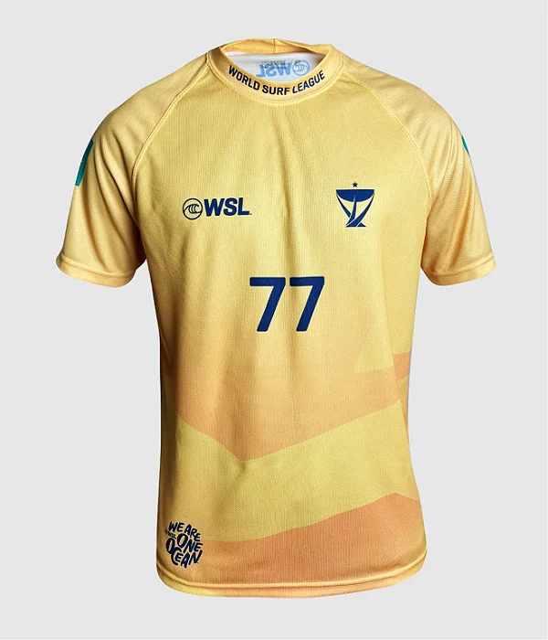 |
| 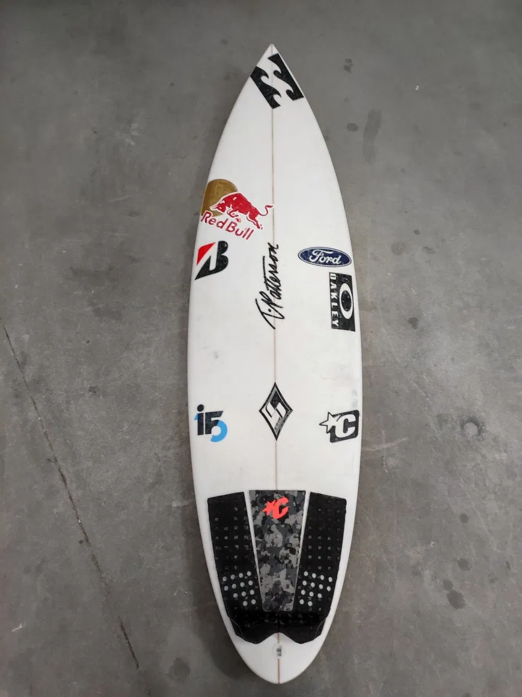 | 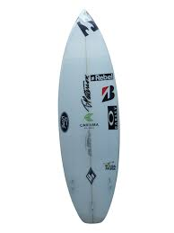 | 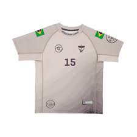 |